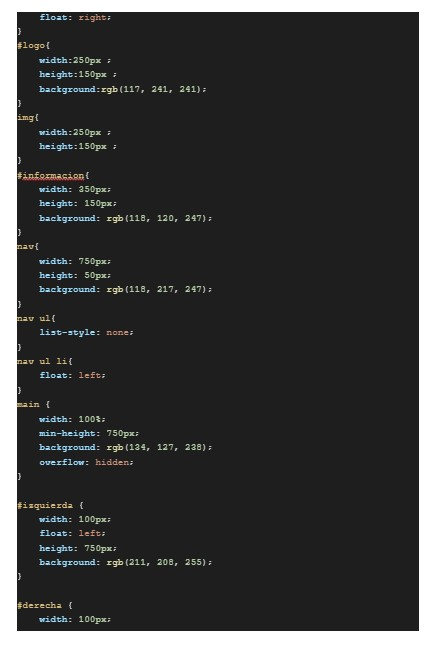

Maquetación de una página web
Elaboración de una maquetación web utilizando los lenguajes HTML y CSS, con el propósito de comprender la estructura básica de una página web y la aplicación de estilos para mejorar su diseño visual. Para desarrollar la práctica, se creó una página que incluyera un encabezado dividido en tres segmentos, un menú de navegación, un apartado principal o main dividido en tres partes y un pie de página, organizando correctamente cada sección mediante etiquetas y divisiones. Además, se copiaron y pegaron los códigos de los archivos HTML y CSS en un documento en blanco y se agregó una captura de pantalla de la visualización de la maquetación en el navegador como evidencia del trabajo realizado. Gracias a esta actividad se aprendió a estructurar páginas web, relacionar archivos HTML y CSS, aplicar estilos como colores, alineaciones y tamaños, así como organizar el contenido de manera ordenada para lograr una presentación funcional y atractiva.

Propiedades de CSS
La actividad consistió en leer y analizar el archivo publicado en Classroom sobre las propiedades del lenguaje CSS, con el propósito de identificar aquellas que permiten darle un mejor formato y diseño a los elementos del menú de navegación de una página web. Durante la práctica se trabajó con códigos HTML y CSS para aplicar estilos como colores, alineación, tamaños, márgenes, fondos y efectos visuales que mejoraran la apariencia y organización del menú. Además, se copiaron y pegaron los códigos de ambos archivos en un documento de texto y se agregó una captura de pantalla de la página web donde se pudiera visualizar claramente el formato aplicado al menú de navegación. Gracias a esta actividad se aprendió la importancia de CSS en el diseño web y cómo sus propiedades ayudan a crear interfaces más ordenadas, funcionales y atractivas para el usuario.